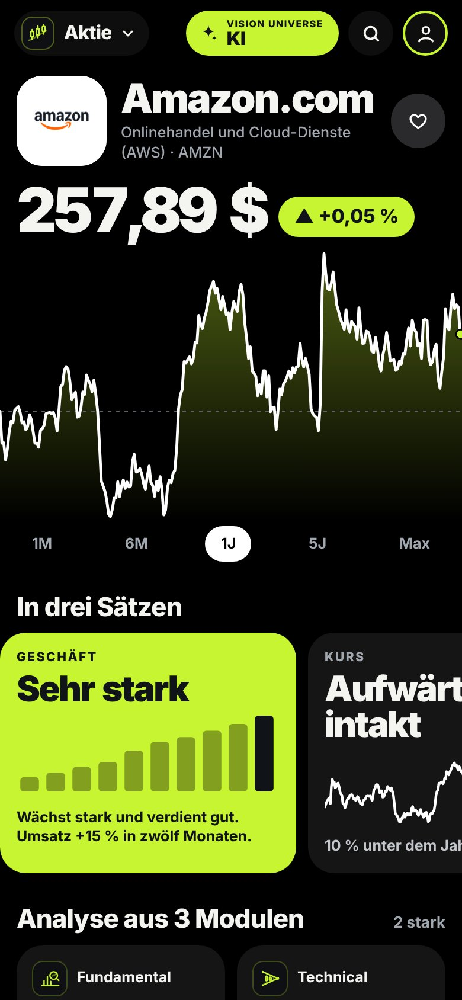
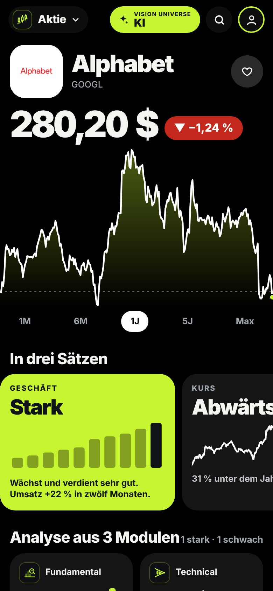
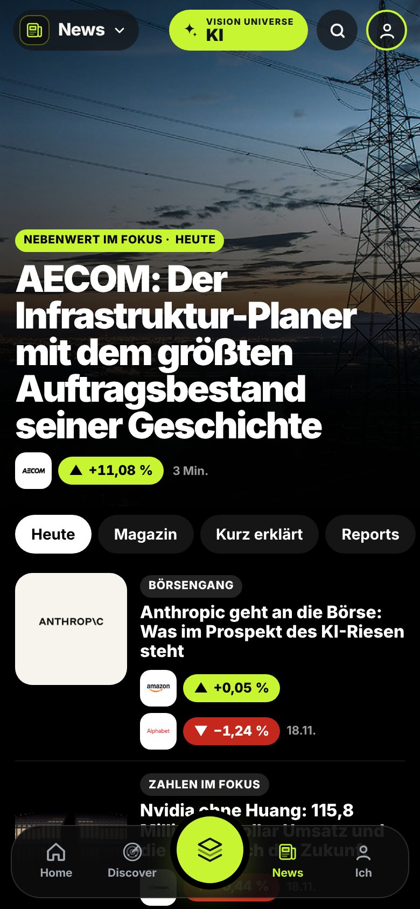

Vision Universe · Eigenwerbung
AppDie App für iPhone und Android
Die Börse ist laut. Wir bringen Ordnung hinein.
Anthropics Großaktionäre
in der App.
in der App.
Amazon und Alphabet halten zusammen über ein Viertel von Anthropic, Nvidia kauft sich ein. Verdient die Firma Geld? Wohin läuft der Kurs? Was machen die großen Anleger? Zu jeder Aktie die Antwort in einfachen Sätzen.

Amazon
Größter Anteilseigner: 14,7 % nach dem Börsengang

Alphabet
Google hält 13,7 %, ist Partner für Rechenleistung

News
Der Börsengang als Tagesartikel, frei lesbar
Echte Ansichten aus der App, Datenstand 17.11.2026.
Verdient die Firma Geld?
Umsatz, Gewinn und Cashflow direkt aus den SEC-Meldungen.
Wohin läuft der Kurs?
Trend und Abstand zum Hoch, jeden Abend neu gerechnet.
Was machen die großen Anleger?
Was Fonds und Insider in ihren Pflichtmeldungen angeben.
Bald im App Store und bei Google Play. Analyse-Software, ohne Empfehlungen.